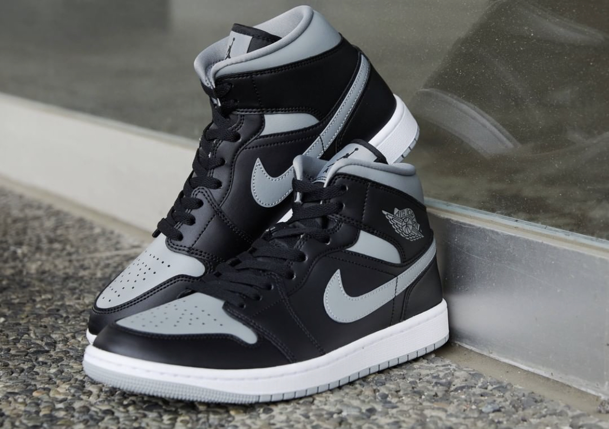
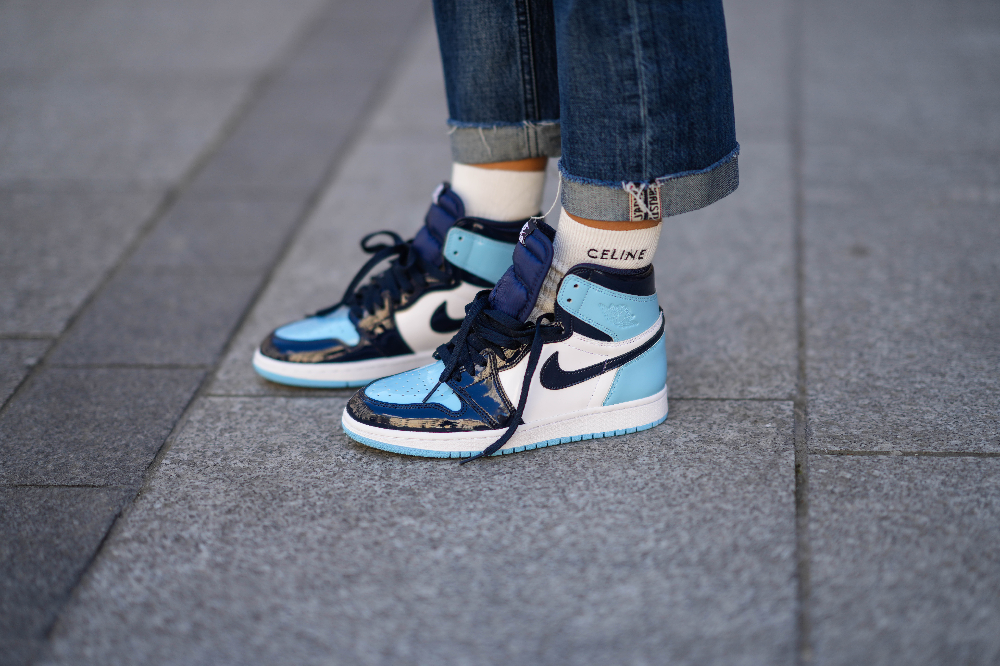
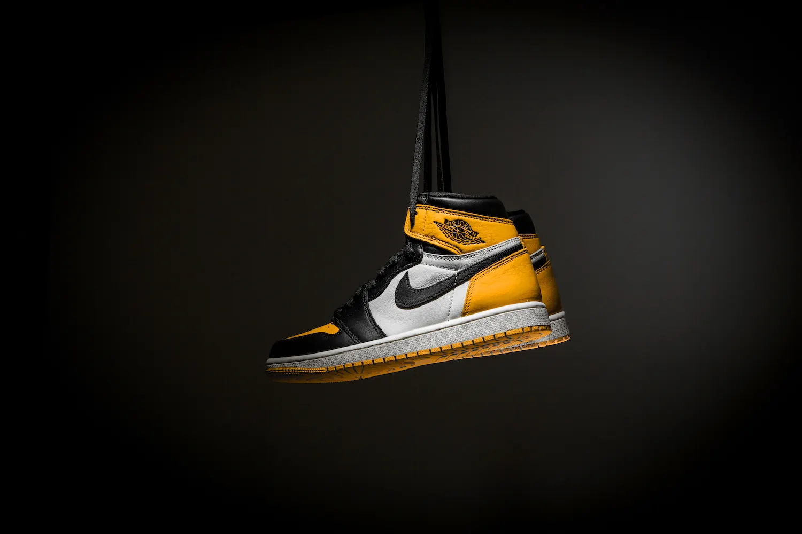
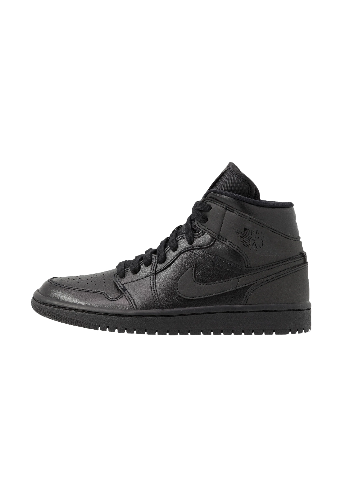

€130
wmns air jordan 1 mid
The One That Started It All
Design:The Air Jordan 1 Mid features a classic design that pays homage to the original Air Jordan 1. It has a mid-top silhouette with a mix of leather and synthetic materials on the upper. The shoe comes in a range of colorways, including some bold and eye-catching options.
Comfort:The Wmns Air Jordan 1 Mid features a padded collar and tongue for added comfort, as well as a cushioned insole. The shoe has a sturdy rubber outsole that provides traction and durability.
Performance: While the Wmns Air Jordan 1 Mid is primarily a lifestyle shoe, it can also be used for light athletic activity. The shoe's mid-top design provides some ankle support, and the rubber outsole offers decent traction.
Branding: The Wmns Air Jordan 1 Mid features the iconic Jumpman logo on the heel and tongue, as well as the "Air" logo on the midsole. These logos are synonymous with the Air Jordan line and add to the shoe's overall appeal.
Wich color is meant for you?


€125

€130

€135

€130

€130